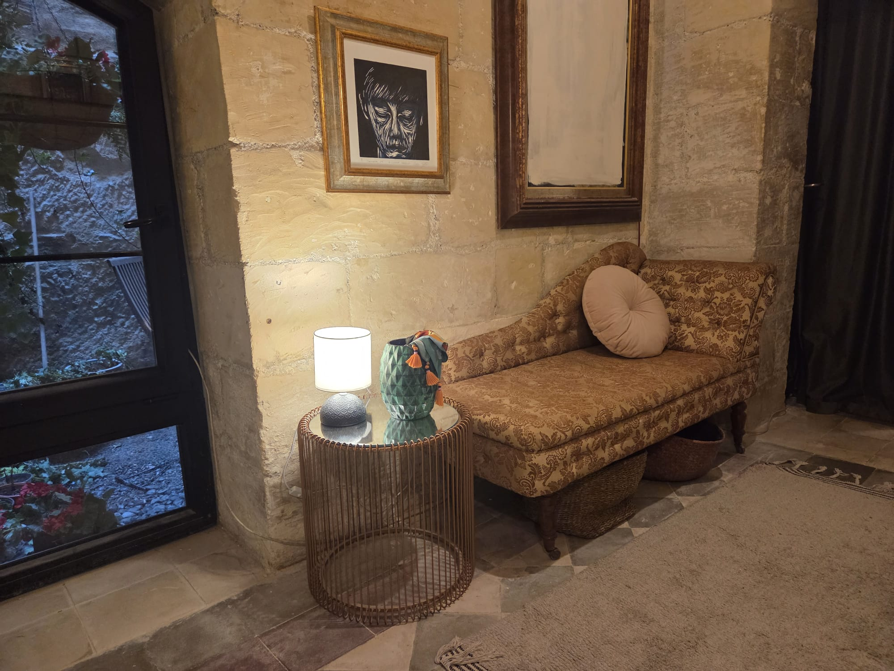

The lower floor
Beneath Floor I lies the older half of the house — Floor Zero — joined to it by a stone staircase of 1647, older than the street numbering, older than most of the city's furniture, and, by the Owner's reckoning, the more beautiful of the two floors.
Its portrait has begun — the first plate is in. The frames below stand empty until the rest of the photographs arrive; more, and better, are promised. When they come, this page will fill the way the upper floor's did — room by room, in order.
— The Owner.

The upper floor, meanwhile, is photographed in full.
Floor I →